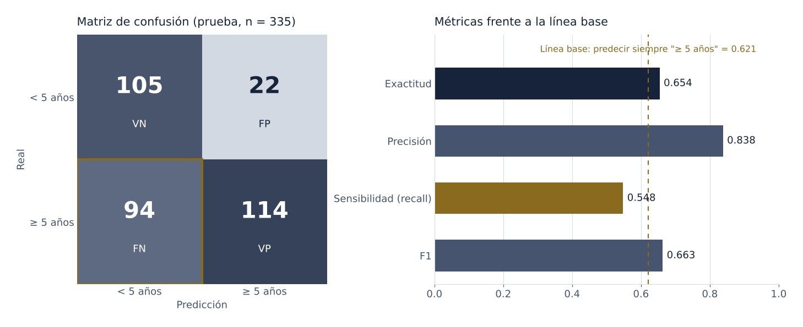

Permanencia de jugadores en la NBA
¿Seguirá un novato en la NBA cinco años después? Un clasificador Naive Bayes gaussiano entrenado con las estadísticas de su primera temporada. Acierta el 84 % de las veces que predice una carrera larga, pero deja pasar casi la mitad de ellas.
- Rol
- Modelado y evaluación, trabajo individual
- Contexto
- Laboratorio · Google Advanced Data Analytics
- Datos
- 1,340 jugadores · estadísticas de temporada de novato
- Herramientas
- Python, pandas, scikit-learn
El problema
Una firma que asesora a equipos de la NBA quiere saber qué jugadores tienen más probabilidad de aguantar en la liga. El objetivo es binario: si el jugador llega o no a cinco años de carrera. Los predictores son diez estadísticas de su primer año — porcentaje de tiros de campo, triples y libres, rebotes, asistencias, robos, tapones y pérdidas — más dos variables construidas en un laboratorio previo de ingeniería de variables: puntos totales y eficiencia.
Cómo lo abordé
- Separación del objetivo y los predictores; partición entrenamiento/prueba 75/25 (1,005 y 335 jugadores)
- Elección del algoritmo: objetivo binario y predictores continuos, así que Naive Bayes gaussiano
- Entrenamiento y predicción con scikit-learn
- Evaluación con exactitud, precisión, sensibilidad, F1 y matriz de confusión
Resultados
- Precisión
- 0.838
- Sensibilidad
- 0.548
- Exactitud
- 0.654
- F1
- 0.663

Lo que dicen los números
La exactitud de 65 % parece aceptable hasta compararla con la alternativa más simple. El 62 % de los jugadores de prueba sí duró cinco años, así que predecir siempre «sí» ya acierta el 62.1 % de las veces. El modelo mejora eso en apenas tres puntos. Con la exactitud sola, el modelo parecería útil sin serlo.
Su valor está en la precisión. Cuando el modelo dice que un jugador durará, acierta en 84 de cada 100 casos; solo se equivoca así 22 veces. A cambio, es tímido: de 208 jugadores que duraron, reconoce 114. Sirve para respaldar una apuesta por un jugador, no para descartar a nadie.
Lo que cambiaría
- Puntos totales y eficiencia se calculan a partir de otras columnas. Eso rompe el supuesto de independencia de Naive Bayes y cuenta la misma información dos veces; probaría el modelo sin ellas.
- Los porcentajes de tiro están acotados entre 0 y 100 y no siguen una distribución normal, que es lo que el modelo gaussiano asume.
- Movería el umbral de decisión con
predict_probapara ganar sensibilidad a costa de precisión, según qué error le cueste más al equipo. - Usaría una partición estratificada con validación cruzada, y una regresión logística como punto de comparación.
Entregables
Ver el notebook Notebook · .ipynb
Actividad práctica del curso The Nuts and Bolts of Machine Learning del programa Google Advanced Data Analytics en Coursera. Los datos son estadísticas de novatos de la NBA preparadas en el laboratorio anterior de ingeniería de variables. Notebook en inglés, como se presentó en el curso.